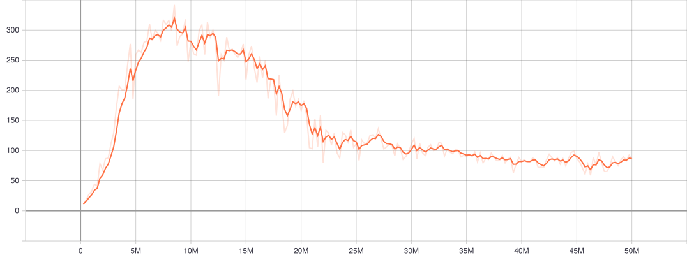
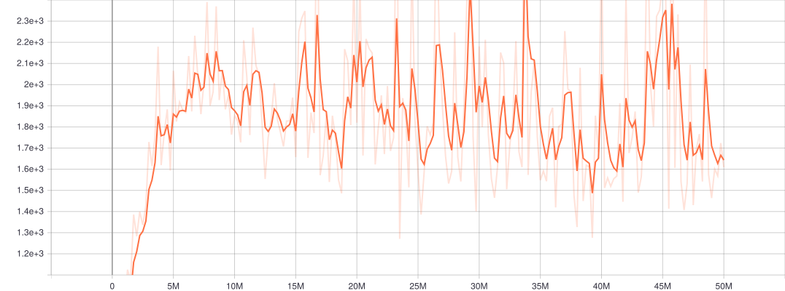
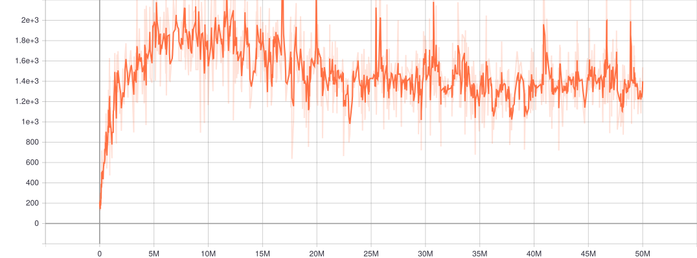
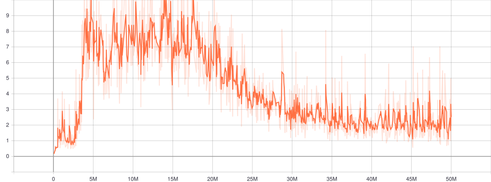
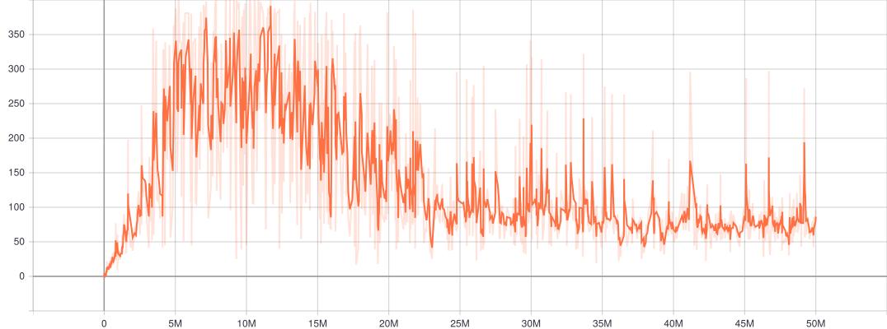

Dopamine_IQN_Atari(breakout)


This experiment tries to use the same config in google/dopamine to run the atari games with IQN, except the following two major differences:
- We use the
BSpline(Linear())instead ofcv2.INTER_AREAmethod to resize the image. ADAMin Flux.jl do not support settingepsilon. (This should be a minor issue.)
On a machine with a Nvidia 2080Ti GPU card, the training speed of this experiment is about 138 steps/sec. The testing speed about 695 steps/sec. For comparison, the training speed of dopamine is about 79 steps/sec.
Following are some basic stats. The evaluation result seems to be aligned with the result reported in dopamine.
Average reward per episode in evaluation mode:

Average episode length in evaluation mode:

Average episode length in training mode:

Training loss per updated:

Reward per episode in training mode:

using ReinforcementLearning
using ArcadeLearningEnvironment
using CUDA
using Flux
using Flux.Losses: huber_loss
using Dates
using Random
using Setfield
using Statistics
using Logging
using TensorBoardLogger# START TODO: move into a common file
using ImageTransformations: imresize!
"""
ResizeImage(img::Array{T, N})
ResizeImage(dims::Int...) -> ResizeImage(Float32, dims...)
ResizeImage(T::Type{<:Number}, dims::Int...)
By default the `BSpline(Linear())`` method is used to resize the `state` field
of an observation to size of `img` (or `dims`). In some other packages, people
use the
[`cv2.INTER_AREA`](https://github.com/google/dopamine/blob/2a7d91d2831ca28cea0d3b0f4d5c7a7107e846ab/dopamine/discrete_domains/atari_lib.py#L511-L513),
which is not supported in `ImageTransformations.jl` yet.
"""
struct ResizeImage{T,N}
img::Array{T,N}
end
ResizeImage(dims::Int...) = ResizeImage(Float32, dims...)
ResizeImage(T::Type{<:Number}, dims::Int...) = ResizeImage(Array{T}(undef, dims))
function (p::ResizeImage)(state::AbstractArray)
imresize!(p.img, state)
p.img
end
function atari_env_factory(
name,
state_size,
n_frames,
max_episode_steps = 100_000;
seed = nothing,
repeat_action_probability = 0.25,
n_replica = nothing,
)
init(seed) =
RewardOverriddenEnv(
StateCachedEnv(
StateTransformedEnv(
AtariEnv(;
name = string(name),
grayscale_obs = true,
noop_max = 30,
frame_skip = 4,
terminal_on_life_loss = false,
repeat_action_probability = repeat_action_probability,
max_num_frames_per_episode = n_frames * max_episode_steps,
color_averaging = false,
full_action_space = false,
seed = seed,
);
state_mapping=Chain(
ResizeImage(state_size...),
StackFrames(state_size..., n_frames)
),
state_space_mapping= _ -> Space(fill(0..256, state_size..., n_frames))
)
),
r -> clamp(r, -1, 1)
)
if isnothing(n_replica)
init(seed)
else
envs = [
init(isnothing(seed) ? nothing : hash(seed + i))
for i in 1:n_replica
]
states = Flux.batch(state.(envs))
rewards = reward.(envs)
terminals = is_terminated.(envs)
A = Space([action_space(x) for x in envs])
S = Space(fill(0..255, size(states)))
MultiThreadEnv(envs, states, rewards, terminals, A, S, nothing)
end
end
"Total reward per episode before reward reshaping"
Base.@kwdef mutable struct TotalOriginalRewardPerEpisode <: AbstractHook
rewards::Vector{Float64} = Float64[]
reward::Float64 = 0.0
end
function (hook::TotalOriginalRewardPerEpisode)(
::PostActStage,
agent,
env::RewardOverriddenEnv,
)
hook.reward += reward(env.env)
end
function (hook::TotalOriginalRewardPerEpisode)(::PostEpisodeStage, agent, env)
push!(hook.rewards, hook.reward)
hook.reward = 0
end
"Total reward of each inner env per episode before reward reshaping"
struct TotalBatchOriginalRewardPerEpisode <: AbstractHook
rewards::Vector{Vector{Float64}}
reward::Vector{Float64}
end
function TotalBatchOriginalRewardPerEpisode(batch_size::Int)
TotalBatchOriginalRewardPerEpisode([Float64[] for _ in 1:batch_size], zeros(batch_size))
end
function (hook::TotalBatchOriginalRewardPerEpisode)(
::PostActStage,
agent,
env::MultiThreadEnv{<:RewardOverriddenEnv},
)
for (i, e) in enumerate(env.envs)
hook.reward[i] += reward(e.env)
if is_terminated(e)
push!(hook.rewards[i], hook.reward[i])
hook.reward[i] = 0.0
end
end
end
# END TODO: move into a common filefunction RL.Experiment(
::Val{:Dopamine},
::Val{:IQN},
::Val{:Atari},
name::AbstractString;
save_dir = nothing,
seed = nothing,
)
rng = Random.GLOBAL_RNG
Random.seed!(rng, seed)
device_rng = CUDA.functional() ? CUDA.CURAND.RNG() : device_rng
Random.seed!(device_rng, isnothing(seed) ? nothing : hash(seed + 1))
if isnothing(save_dir)
t = Dates.format(now(), "yyyy_mm_dd_HH_MM_SS")
save_dir = joinpath(pwd(), "checkpoints", "dopamine_IQN_atari_$(name)_$(t)")
end
lg = TBLogger(joinpath(save_dir, "tb_log"), min_level = Logging.Info)
N_FRAMES = 4
STATE_SIZE = (84, 84)
env = atari_env_factory(name, STATE_SIZE, N_FRAMES; seed = isnothing(seed) ? nothing : hash(seed + 2))
N_ACTIONS = length(action_space(env))
Nₑₘ = 64
init = glorot_uniform(rng)
create_model() =
ImplicitQuantileNet(
ψ = Chain(
x -> x ./ 255,
CrossCor((8, 8), N_FRAMES => 32, relu; stride = 4, pad = 2, init = init),
CrossCor((4, 4), 32 => 64, relu; stride = 2, pad = 2, init = init),
CrossCor((3, 3), 64 => 64, relu; stride = 1, pad = 1, init = init),
x -> reshape(x, :, size(x)[end]),
),
ϕ = Dense(Nₑₘ, 11 * 11 * 64, relu; init = init),
header = Chain(
Dense(11 * 11 * 64, 512, relu; init = init),
Dense(512, N_ACTIONS; init = init),
),
) |> gpu
agent = Agent(
policy = QBasedPolicy(
learner = IQNLearner(
approximator = NeuralNetworkApproximator(
model = create_model(),
optimizer = ADAM(0.00005), # epsilon is not set here
),
target_approximator = NeuralNetworkApproximator(model = create_model()),
κ = 1.0f0,
N = 64,
N′ = 64,
Nₑₘ = Nₑₘ,
K = 32,
γ = 0.99f0,
stack_size = 4,
batch_size = 32,
update_horizon = 3,
min_replay_history = 20_000,
update_freq = 4,
target_update_freq = 8_000,
default_priority = 1.0f2, # only valid when trajectory is CircularArrayPSARTTrajectory
rng = rng,
device_rng = device_rng,
),
explorer = EpsilonGreedyExplorer(
ϵ_init = 1.0,
ϵ_stable = 0.01,
decay_steps = 250_000,
kind = :linear,
rng = rng,
),
),
trajectory = CircularArraySARTTrajectory(
capacity = 1_000_000,
state = Matrix{Float32} => STATE_SIZE,
),
)
EVALUATION_FREQ = 250_000
MAX_EPISODE_STEPS_EVAL = 27_000
total_reward_per_episode = TotalOriginalRewardPerEpisode()
steps_per_episode = StepsPerEpisode()
hook = ComposedHook(
total_reward_per_episode,
steps_per_episode,
DoEveryNStep() do t, agent, env
with_logger(lg) do
@info "training" loss = agent.policy.learner.loss
end
end,
DoEveryNEpisode() do t, agent, env
with_logger(lg) do
@info "training" reward = total_reward_per_episode.rewards[end] episode_length =
steps_per_episode.steps[end] log_step_increment = 0
end
end,
DoEveryNStep(;n=EVALUATION_FREQ) do t, agent, env
@info "evaluating agent at $t step..."
p = agent.policy
p = @set p.explorer = EpsilonGreedyExplorer(0.001; rng = rng) # set evaluation epsilon
h = ComposedHook(TotalOriginalRewardPerEpisode(), StepsPerEpisode())
s = @elapsed run(
p,
atari_env_factory(
name,
STATE_SIZE,
N_FRAMES,
MAX_EPISODE_STEPS_EVAL;
seed = isnothing(seed) ? nothing : hash(seed + t)
),
StopAfterStep(125_000; is_show_progress = false),
h,
)
avg_score = mean(h[1].rewards[1:end-1])
avg_length = mean(h[2].steps[1:end-1])
@info "finished evaluating agent in $s seconds" avg_length = avg_length avg_score = avg_score
with_logger(lg) do
@info "evaluating" avg_length = avg_length avg_score = avg_score log_step_increment = 0
end
end,
)
stop_condition = StopAfterStep(
haskey(ENV, "CI") ? 10_000 : 50_000_000,
is_show_progress=!haskey(ENV, "CI")
)
Experiment(agent, env, stop_condition, hook, "# IQN <-> Atari($name)")
endex = E`Dopamine_IQN_Atari(breakout)`
run(ex)This page was generated using DemoCards.jl and Literate.jl.